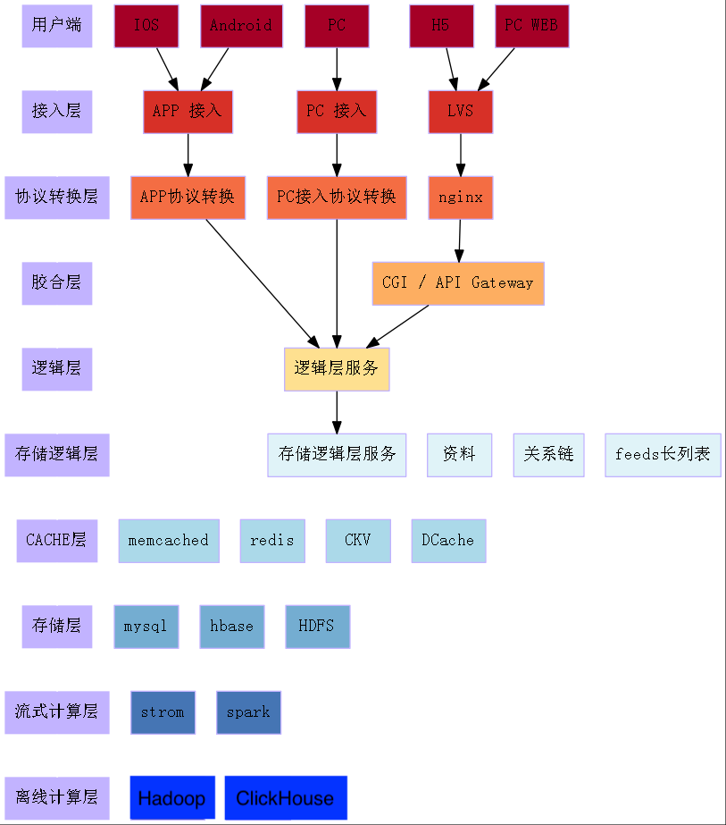
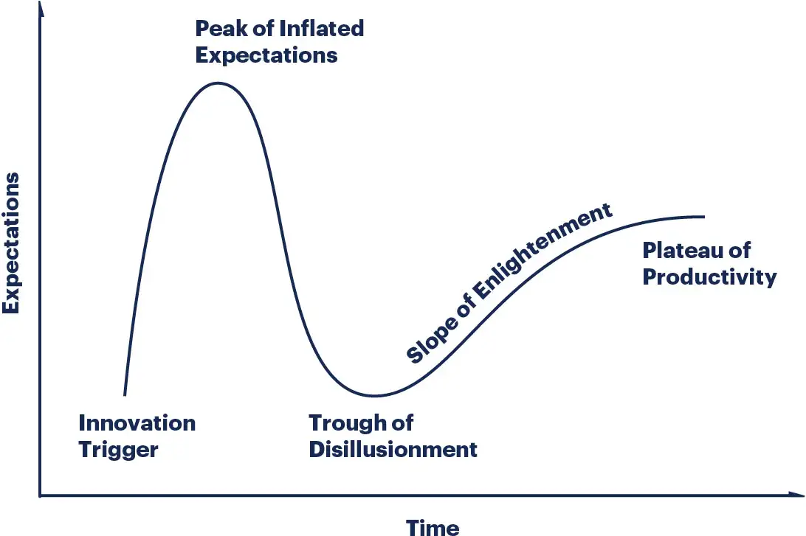
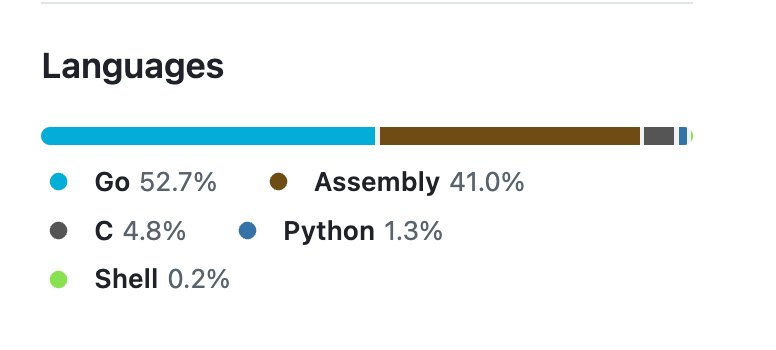
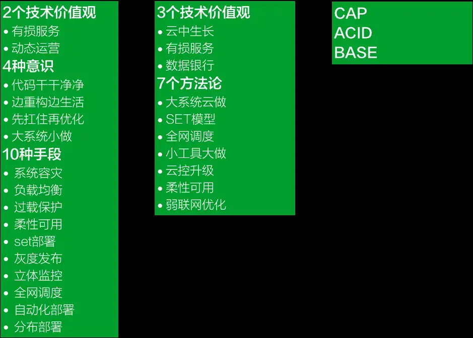

后台服务器开发领域，还有什么值得爬的山
因为我自己的水平还在山脚下，所以我只看见了眼前的这几座山……
二十年前我刚入行的时候，我的岗位被称作“后台服务器开发”，如今可能有很多叫法：后端工程师，云原生工程师，微服务开发工程师……等等。为了纪念我逝去的青春，文中仍然沿用了“后台服务器开发”这个古老的词汇。
后台服务器开发这个领域还值得去做吗？
假设一个刚刚毕业的师弟师妹，对你问出标题中的这个问题，你会如何回答？
服务器开发工作，有这样一些特点：
服务器硬件的标准统一，结构简单；特别是相比于 IOS/Android 等手持设备，实在是简单太多了。
在腾讯内部，后台服务器开发工程师把后台服务器的主要硬件称为四大金刚，即：CPU，内存，网卡，磁盘。服务器开发的核心任务，就是平衡和使用好这四大金刚，并祈祷四大金刚以保佑服务不出问题。
从硬件环境看，后台服务器开发一点也不难
服务器硬件的资源相对充裕，不太可能在开发中遇到捉襟见肘的情况。动辄上百核的 CPU，接近 TB 的内存……这是嵌入式开发工程师羡慕不来的。
后台服务器的虚拟化水平已经非常成熟：且不说什么 KVM / 虚拟机 / Cgroups / Docker 了，类似 K8s 这样的云端资源管理和调度系统已经可以把超大规模的集群管理得很好了。
服务端的各个层次的组件也非常成熟：
接入层有 LVS, Nginx等
CACHE 层有：redis, memcached 等
存储层更是多入牛毛：MongoDB, MySQL(各种 SQL, NoSQL, 结构化的，非结构化的)....等
各种后端组件丰富，成熟，好用，性能高
云服务的成熟，让后台服务器开发面对海量请求和广阔地域分布这样的高难度任务也变得简单。当然，前提是你舍得花钱。
后台服务器开发工程师，在整个后端的技术层次中，其能做的事情被压缩到了业务逻辑这一层。大多数服务器开发工程师只需要做做业务逻辑，而其他层次的任务都有强悍的后端组件来解决了。
后端组件的成熟，即便是面对高性能海量数据处理也变得简单。后台服务器开发的门槛越来越低了。
图中的架构图源于我总结的后端的教程：《海量后台开发-从入门到放弃》
从架构的层次上看，各个层次都有非常好的组件：

从技术发展曲线上看，后台服务器开发领域已经进入了“生产力高原”
如图：服务器开发的技术成熟度曲线

当前的后台服务器开发，就是要做好二十年前就应该知道应该要做好的那些事情
大约在 20 年前，腾讯的 CTO 张志东(内部尊称他为Tony大师兄)提出了后台服务器开发领域的“海量服务价值观”（或叫做“海量服务之道”）。在 2016 年左右，为了配合腾讯云的技术战略，又提出了“海量服务之道 2.0”，对之前的理念做了增补和延展。我认为“海量服务价值观”是服务器开发领域了不起的方法论和思考框架，用如此简洁和直达要点的方式，指导我们如何去做好服务器开发的工作。
这些耳熟能详后端设计原则有：立体监控、柔性可用、负载均衡、过载保护、灰度发布……等等
请看：
《云中生长——移动互联网时代的用云价值观【海量服务之道2.0】》 谢明（Reganxie） 2015年03月
后台服务器开发领域，成熟的不仅仅只是硬件、组件、工具……，还有如同“海量服务之道”这样的成熟的思维框架。
关于海量服务之道，我想要致敬的内容实在太多，可以跳到“附录：我所理解的海量服务之道”
做好服务器开发的工作，似乎与技术水平的关联度越来越低，而是更需要工程师的“意识”
请看我之前总结的文章：写好海量后台服务最重要的是意识
知道该做什么，也知道做到这些不难，最终对服务器开发工程师的要求就变成了要有“意识”
随着 AI 的不断发展，服务端业务逻辑代码“越来越没营养”，越来越多的代码可能都将由 AI 生成
AI 会取代大量的开发工程师，当然也包含后台服务器开发工程师这个职业。这个趋势会愈演愈烈，See: 《微软裁员风暴：软件工程岗成为AI 冲击的重灾区》
未来的程序员更像是全栈的角色，并且向架构专家、业务专家、技术管理等角色延伸。未来人类程序员可能都会升级到现在的 team leader的位置，他的下属就是 AI，他会以技术管理者的身份把 AI 提供的各种代码片段整合起来。那时，哪里又会有什么服务器开发的工种？
服务器开发工程师面对 AI 的态度
既然服务器开发这个开发工作已经没什么搞头，后面又有 AI 的围追堵截，服务器开发工程师应该怎么办？ 服务器开发工程师不会等着 AI 来革他们的命。他们对于 AI 挤压他们的生存空间这件事情，下面这张图或许可以用来表达他们的态度：
服务器开发工程师将不断攀登，永不屈服。 他们只会自己卷死自己，没有人(和AI)可以淘汰他们！
值得再爬一爬的技术之山
前面说了非常非常多悲观的话，但对于服务器开发工程师而言，那个一直维持着这个职业存在的理由依然还在，那就是：这个世界对计算的需求仍然非常强劲。
需要计算，就会需要服务器开发工程师。
下面，我畅想出一些技术点，这些技术会使得服务器的计算能力变得更加强悍，服务器开发工程师对算力的深入使用可以爬上更高一些的技术山峰。
JIT 编译服务器
先谈一谈我非常喜欢的一个 golang 组件： Sonic (https://github.com/bytedance/sonic). Bytedance 开源了一个 JSON 序列化/反序列化的库，目前看起来是 golang 领域的世界第一。
我看到了一句对这个库很经典的评价：如何用 golang 写出性能极高的代码？答案是不用 golang.

可以发现，汇编代码占了很大一部分。
虽然 sonic 库的性能非常强悍，但是可以预见到，随着这个库持续的维护，将会出现这样一些难题：
适配不同体系结构的工作量会很大
目前支持 AMD_64，如果要支持 ARM64，工作量不亚于重新写一遍
字节跳动的 sonic (Golang下最快的 JSON 解析库)
Sonic 会做得越来越复杂
开发上，为了避免复杂的 build流程，工程师开发起这个库会特别憋屈：
先用 c/c++ 写一遍，确保性能优化的手段有效
把 c/c++ 编译成 AT&T 汇编
手动把 AT&T 汇编写成 plan9 汇编
解决方案：
使用 llvm，做一个机器码生成的编译服务器
客户端发出需求，服务器端编译好机器码，客户端使用 mmap 得到一块内存，把内存的属性设置为可运行
声明一个函数指针，指向这片内存
运行这个函数
对于一个巨大的 JSON，假设 1MB
99%的情况下，这个 JSON 的格式都是固定的，key的顺序都不变，仅对应的 value 变化了
对于这样的场景，如何写出一个 json 解析程序，使得这个性能的程序是最好的？
创造一个概念：无分支解析， 100% 的 code cache hit
最终做到：99%的情况，一遍扫描就解析整个 json，且性能做到极致

假设有一个很大的 json，其 key 的顺序在 99% 的情况下都是不变的：
{ "key1":"value1", "key2":"value2", "key3":"value3", // .....}对于一个 json.Unmarshal() 程序，一般会这么写：
func parse(jsonAst, targetStruct){ for key, value := range jsonAst{ switch key{ case "key1": fill_struct_for_key1(targetStruct, value1) break case "key2": fill_struct_for_key2(targetStruct, value2) break case "key3": fill_struct_for_key3(targetStruct, value3) break } }}而使用 JIT 的模式，可能会这么写：
func fastParseOnlyForParticularJson(jsonAst, targetStruct){ key,value := jsonAst.Next() if key!="key1"{ return slowParse(jsonAst, targetStruct) } fill_struct_for_key1(targetStruct, value) // key,value = jsonAst.Next() if key!="key2"{ return slowParse(jsonAst, targetStruct) } fill_struct_for_key2(targetStruct, value) // key,value = jsonAst.Next() if key!="key3"{ return slowParse(jsonAst, targetStruct) } fill_struct_for_key3(targetStruct, value) }上面的代码有这样一些特点：
对于 99% 的情况，这个解析程序顺序从头执行到尾，无任何跳转；（相信代码cache命中率也非常高）
对于 1% 的情况，会走到常规的 slowPath 上去
这个特定的函数只能针对特定的 json 结构
但是，对于特定的 json 结构而言，已经不可能有别的 json 解析方法比这个方法更快了
最终做到：通过 JIT 服务生成特定格式的解析代码，可以做到对特定格式的数据解析，全世界已经没法出现比这段代码更快的解析方法了。
由近及远，分层通讯
再没有什么“网络”，只有访问不同延迟级别的内存而已。
微服务架构是基于 IP 网络来设计的。看似这样的架构连跨大洲的分布式环境也能适应。
但是，为了让服务器的处理性能进一步提升，且满足 AI 时代的需求，必然需要从物理延迟来划分成多个层级，并按照层级来就近处理。
各种基础软件，都要支持分层通讯。
例如：
xcat 1pb_data.txt | grep "text" | grep "xxx"grep 这里，可能同时执行于同 NUMA 和同机房。
再没有什么“网络”，只有访问不通种类内存的延迟不同。
· JIT 编译服务器
· rust 生命周期管理
· AI 数据结构
· 由近及远，分层通讯
逐层是这样来的：
级别 1 : per core， 最大限度地，无锁，减少调度，提升代码cache hit
同一核，意味着程序可以以 event loop 模式或者协程模式来工作，而没有任何锁的开销。
级别 2：同 numa。意味着所有线程访问内存都是同样的快。
级别 3： 同服务器。可能跨 NUMA 访问会带来一定的延迟，但总好过于跨机器通讯。
级别 4： 同交换机。同交换机上的延迟更低，对网络流量的上限更高。
级别 5：同机房。延迟可控，但需要关注网络的结构，过大的带宽可能导致网络设备过载。
级别 6： 同城。主要用于复杂业务的跨机房容灾。延迟相对较低。
级别 7： 同省。跨城市容灾，物理距离可能就几百公里。云游戏等业务勉强可玩。
级别 8：同大洲。机房之间可能间隔上千公里。
级别 9： 跨大洲。
分层通讯中，尤其需要改进的是：同 core 到同 NUMA 这个层级。
因为这个层级可以充分利用机器的算力。
1 进程可以开发为单进程单线程的应用，仅完成单一的功能；
2 进程绑定到具体的 core 上
可以最大限度地利用代码cache的利用率
可以避免锁的开销
可以减少操作系统调度带来的影响
3 进程之间，通过共享内存队列来通讯
多种业务占满一个 NUMA
业务的一个 SET，在一个 NUMA 内
把每个 NUMA 看成独立的计算机使用
同机器通讯，仅用于公共 agent 的场景。
微服务架构，是基于 TCP 来设计的，看起来连跨大洲的分布式服务，也能用微服务架构来解决。
但是，位置透明性提升了便利性，却忽略了局部性原理导致的优化机会。
分层级通讯，能够最大限度地利用局部性的特性来达到最优利用率。
如同rust中的生命期管理一样的编译器优化技术
观点：编译器技术的提升，通过变量的生命周期的跟踪，通过牺牲编译时间，换取运行时减少 GC 的效果。
各种语言的编译器都可以抄袭 rust 的变量生命周期管理功能。
func hash(a int, b int) int64{ str := fmt.Sprintf("a:%d/b:%d", a, b) return Crc64(str)}上面的例子中，变量 str 分配到堆上。
当函数结束后， str 需要等待 gc 来收集。
如果 golang 编译器做了 rust 一样的变量生命周期的跟踪，可以发现 str 的生命周期结束于运行函数 Crc64 之后。
那么，编译器完全可以在代码生成时，插入一段从堆中删除对象的代码：
func hash(a int, b int) (out int64){ str := fmt.Sprintf("a:%d/b:%d", a, b) out = Crc64(str) // delete(str) return}由此，gc 的压力将进一步减小。性能得到了提升。
Arena 模式的内存分配。
golang 代码的优化模式：
Sync.Pool: 是个好办法，但是粒度太小的场景，性能提升不是很大；并且，从 pool 中 Get() 对象是全局加锁的，可能又带来并发的问题。
模式二：自有 Context 模式
把所有可能产生在堆上的对象，全部定义到一个 Context 中
每次在 Request() 函数的开头，从 pool 中获得这个 MyContext 对象，并 Reset() 成初始状态
每个函数中需要临时对象的时候，都使用 MyContext 中的成员
在处理完 Request() 后，把 MyContext 放回 pool 中
参考我之前的总结：
模式三：Arena 模式
对于大量的，同类型的，变长的，生命周期可以统一结束的对象
预先分配一块大的内存
这些对象从这块大内存中去获取存储区域
生命周期结束后，只需要一次 gc 扫描
AI加持的数据结构
观点：一个 hash 表的桶应该多长，分配的数组在大多数情况下多长，才能避免多次扩容数组？
DPU 计算
一般面向 CPU 来做业务逻辑；
部分大运算量的工作会用到 GPU
而网卡上的计算芯片被忽略，其实可以依靠 DPU 来做很多深层次的优化。
后台服务器开发领域，还有什么值得爬的山
爬的山反过来又促进了整个后台工种的淘汰。
未来的程序员全是全栈，单一的工种越来越少。
还好，后台服务器程序员是自己淘汰自己的，而不是因为 AI 被动淘汰的。这也不失为一种骄傲。
附录：我所理解的“海量服务之道”
以下内容来自互联网上已经公开的资料
海量服务之道 1.0 的内容：
海量服务之道 2.0 的内容：
《云中生长——移动互联网时代的用云价值观【海量服务之道2.0】》 谢明（Reganxie） 2015年03月

我理解的海量服务之道：

后台服务器开发工程师这个职业，正在不可避免地被 AI 取代。
那么，后台服务器开发这个角色，能不能再爬几座山，自己革自己的命，而不是等着被 AI 淘汰？
观点一：二十年前就已经知道要做哪些事情
观点二：AI 的进步促使后台服务器开发这个工种面临淘汰
海量服务价值观等方法论体系，标志着后台服务器开发领域的思考框架也非常成熟。
后台服务器开发领域，还有什么值得爬的山
爬的山反过来又促进了整个后台工种的淘汰。
未来的程序员全是全栈，单一的工种越来越少。
还好，后台服务器程序员是自己淘汰自己的，而不是因为 AI 被动淘汰的。这也不失为一种骄傲。
jit 编译服务器， 画个架构图
jit 编译服务器的意义： 为特定问题和特定格式数据，动态生成最优的机器码。
C IT建议服务器后面可以加上大圆模型，然后可以通过丰富的提示词，把特定的需求转换为LVMIR的代码，然后再使用LLVM的GT功能，把AR代码编译成机器码，再把机器码返回给调用端，然后调用端就可以使用一个高性能的函数来完成他所需要的工作
服务器硬件的扩展：
cpu 扩展到 gpu, 再扩展到 fpga 的各种专用计算设备
网卡扩展到 dpu, 为高带宽通讯加速
内存：
向 cpu 靠近，则是考虑如何优化 l1 l2 l3 得使用。手段包括且不限于： cache line 对齐， 数据预取， cache hit 提升， 防止伪共享等
内存向外，则是以 rdma 一类的技术。未来，存取另一台服务器的内存可能成为常态。
磁盘， 目前 ssd 大行其道。虚拟化及 rdma 技术的发展，远程存储也会变得普遍。